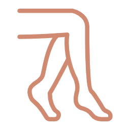
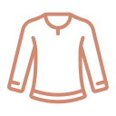
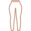
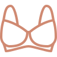
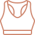
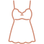

Компактно сложить вещи — не значит сжать их как можно сильнее. Если способ не подходит вещи, пользоваться ящиком будет неудобно: футболки начнут мяться, носки перемешаются, бюстгальтеры потеряют форму, а ремни могут цеплять ткань.
Главное правило простое: разные вещи нужно складывать по-разному.
Носки и колготки удобнее сворачивать рулонами. Футболки и лонгсливы — складывать прямоугольниками и ставить вертикально. Джинсы, джемперы и пижамы лучше собирать в более крупные блоки. А бюстгальтеры и мягкие топы нельзя сильно прижимать: им нужна свободная деликатная зона.
01 — ШпаргалкаШпаргалка: как складывать разные вещи
Способов немного — важно подобрать правильный под каждую вещь.
 Носки
Носки
Колготки и чулки Платки и шарфыПары и комплекты не путаются, всё видно сверху, а тонкая ткань меньше цепляется.
 Футболки
Футболки
Лонгсливы Трусы Боксеры Трусы
Трусы
Леггинсы ДжинсыВиден весь ряд, а не только верхняя вещь, и стопки не расползаются. Ширину прямоугольника подбирайте под вещь: бельё — тоньше, джинсы — крупнее.

Бюстгальтеры
Мягкие топыЧашки и поролон не сминаются — вещь сохраняет форму.

ПижамыВерх и низ остаются вместе — не нужно искать пару по всему ящику.
 Ремни
РемниПряжки не цепляют ткань соседних вещей.
02 — Без сжатияЧто не стоит сжимать
Не все вещи выигрывают от максимальной компактности. Бюстгальтеры, спортивные топы с чашками, объёмные джемперы, деликатные ткани и вещи с фурнитурой лучше хранить свободнее.
Если вещь трудно достать или вернуть обратно, значит, она сложена слишком плотно или лежит не в своей зоне.
03 — ВертикальКогда вертикальное хранение работает
Вертикальное хранение удобно для футболок, лонгсливов, леггинсов, белья и части домашней одежды. Оно помогает видеть весь ряд, а не только верхнюю вещь.
Но это не универсальный способ. Ремни лучше хранить спиралями, платки — рулонами, украшения — плоско и отдельно, а крупные вещи — устойчивыми блоками. Хорошая система не заставляет все вещи жить по одному правилу.
04 — ПроверкаКак понять, что Вы сложили вещи удобно
Удобно сложено, если
- Нужную вещь видно сверху
- Её легко достать одной рукой
- После стирки понятно, куда её вернуть
Если каждый раз приходится поправлять весь ящик, проблема не в аккуратности. Скорее всего, вещам не хватает своих зон.
05 — ИтогЧто в итоге
Компактное хранение работает, когда способ складывания подходит самой вещи. Носки — рулонами, футболки — вертикально, джинсы — крупными блоками, бюстгальтеры — без сильного сжатия.
А чтобы вещи не перемешались через неделю, одного складывания мало. Важно, чтобы у каждой категории было своё место в ящике.